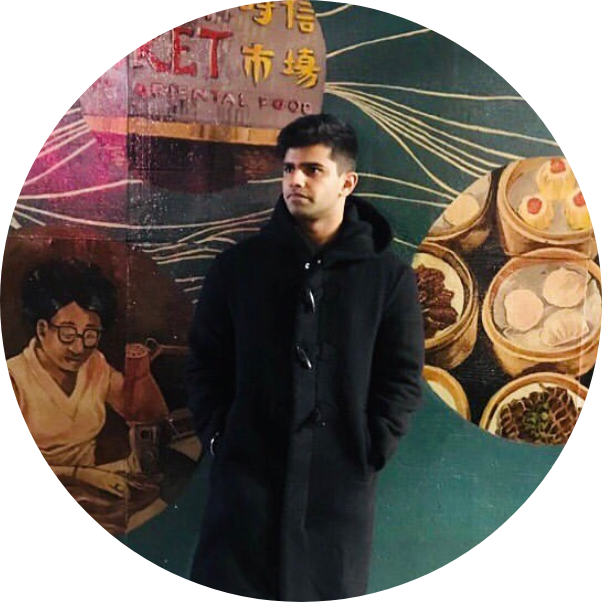

About

Let me tell you about myself
My intellectually curious, team player and resilient nature drives my passion for business and problem solving.
As a rising Senior at Bentley university rated#10 as the best business schools by Bloomberg.I am pursuing bachelor of science in corporate finance, with a minor in international relations.
My work experience includes interning at a hedge fund in UK, fastest growing NBFC in India, a wealth management firm in India and one of the largest spring manufacturing company in the world based in India.These experiences have helped me look at finance through a global lens and developed strong communication, analytical, multitasking and time management skills.
I am always looking for mentorship and any advise on career. I am looking for an opportunity in the field of Finance or consulting to continue my drive to solve problems by bringing in a unique global perspective.